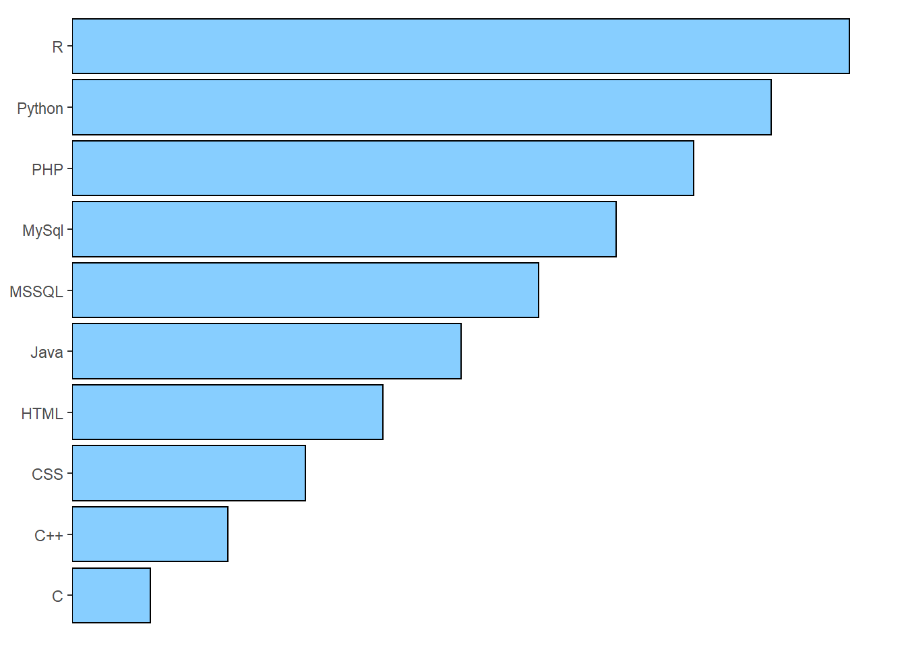
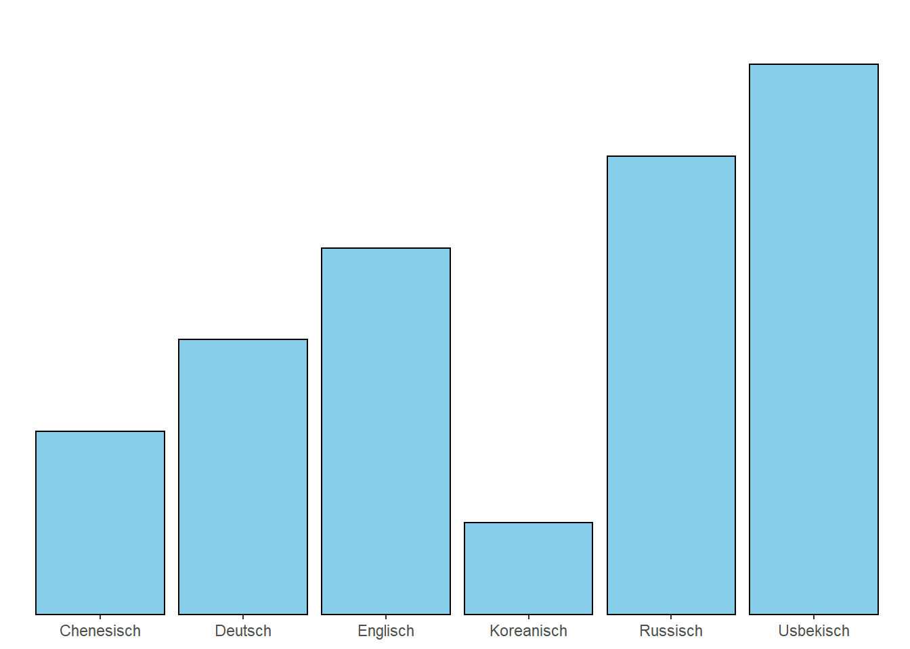

“Gebildet ist, wer weiß, wo er findet, was er nicht weiß.”
— Georg Simmel
| Persönliche Daten | ||
|---|---|---|
| Geburtsdatum: | DD.MM.19YY | |
| Geburtsort: | Earth | |
| Adresse: | Somewhere | |
| E-Mail: | example@mail.com | |
| Telefon: | +49(0)1234 5678901 |
| 12/2016- Aktuell |
Arbeitnehmer MusterFirma AG - Aufgabe X - Aufgabe Y - … |
| 09/2011 11/2016 |
Arbeitnehmer MusterFirma GmbH - Aufgabe X - Aufgabe Y - … |
| 03/2013- 04/2014 |
R Language for Everyone Akademisches Zentrum e.V. Zertifikat |
| 04/2009- 01/2011 |
Masterstudium XY University Master of Arts (M.A.) |
| 01/2006- 04/2009 |
Bacherorstudium XY University Bachelor of Science (B.Sc.) |
| 06/2003- 09/1992 |
Abitur XY Gymnasium |

